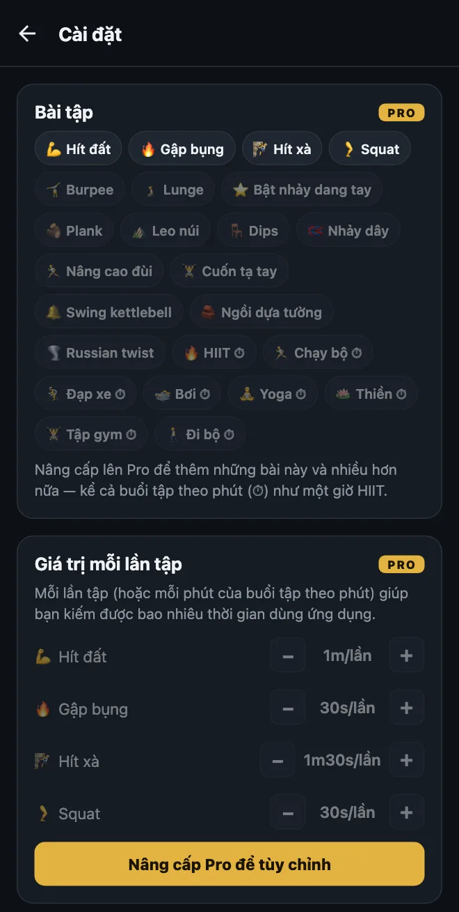
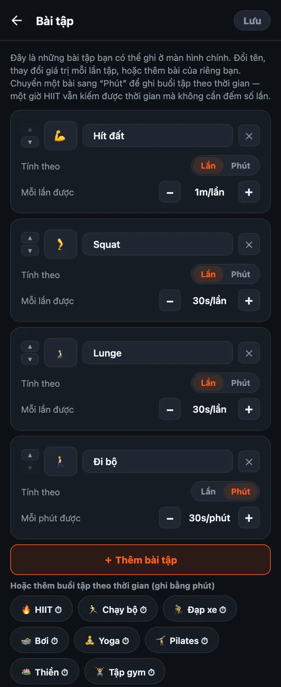

Cách tùy chỉnh bài tập trong HonorFit
Chào mọi người! Với mình, HonorFit khởi đầu là một app chặn ứng dụng bằng hít đất: Instagram bị khóa cho tới khi mình hít đất vài cái, và mình tự ghi lại số lần theo cơ chế tự giác (không camera). App có sẵn bốn bài tập: hít đất, gập bụng, hít xà và squat.
Nhưng đâu phải ai cũng muốn hít đất. Có thể cổ tay bạn ghét nó, có thể bạn thích burpee hơn, hoặc hôm nay bạn đã chạy 8 cây số rồi và muốn được tính công. Hợp lý mà! Nên bạn đổi được hết. Dưới đây là cách làm cụ thể, và cái gì miễn phí, cái gì cần Pro.
Cái gì miễn phí, cái gì cần Pro
Nói trước luôn cho rõ: thay đổi bài tập là tính năng Pro. Bản miễn phí có bốn bài tập sẵn với các giá trị sau:
| Bài tập | Mỗi lần được (mặc định) |
|---|---|
| 💪 Hít đất | 1 phút |
| 🔥 Gập bụng | 30 giây |
| 🧗 Hít xà | 1 phút 30 giây |
| 🦵 Squat | 30 giây |
Ở bản miễn phí, mỗi bánh xe đếm tối đa 20 lần một hiệp, và bạn tích được tối đa 20 phút mỗi lúc. Chặn ứng dụng, ghi lần tập và thống kê thì miễn phí mãi mãi.
Pro có giá $3 một tháng hoặc $19,99 trả một lần (đó là giá ở Mỹ; giá thay đổi theo quốc gia và đơn vị tiền tệ, và store sẽ hiện giá bằng tiền của bạn). Pro cho bạn thêm, đổi tên và xóa bài tập, chỉnh mỗi lần tập được bao nhiêu thời gian, ghi buổi tập theo phút, nâng bánh xe lên 100 lần một hiệp, và bỏ giới hạn 20 phút. Pro còn vài thứ khác nữa, nhưng bài này chỉ nói về bài tập thôi.

1. Mở trình chỉnh sửa bài tập
- Ở màn hình chính, chạm vào bánh răng ở góc trên bên phải để mở Cài đặt.
- Chạm vào thẻ Bài tập ở trên cùng.
Bạn sẽ thấy mỗi bài tập một thẻ. Mọi thay đổi ở đây chỉ có hiệu lực khi bạn chạm Lưu ở góc trên bên phải, nên cứ thoải mái vọc. Nếu thoát ra mà không lưu thì không có gì thay đổi cả.

2. Đổi tên bài tập hoặc đổi emoji
Chạm vào tên và gõ bất cứ thứ gì bạn muốn. “Hít đất” có thể thành “Hít đất quỳ gối” hay “Chống đẩy tường” nếu đó mới là bài bạn thật sự tập. Muốn đổi biểu tượng thì chạm vào ô emoji bên trái và chọn một cái trong lưới (có khoảng 40 emoji kiểu thể thao).
Một chi tiết nhỏ: tên các bài có sẵn đi theo ngôn ngữ của app, nên điện thoại để tiếng Việt thì bạn thấy “Hít đất”, để tiếng Anh thì thấy “Pushups”. Còn khi bạn đã tự đổi tên, app hiện đúng y những gì bạn gõ.
3. Chỉnh mỗi lần tập đổi được bao nhiêu thời gian
Dưới mỗi bài tập có dòng Mỗi lần được với nút − và +. Mỗi lần chạm thay đổi 5 giây, thấp nhất là 5 giây. Vậy là bạn có thể cho burpee được 1 phút 30 giây và bật nhảy dang tay được 10 giây, miễn bạn thấy công bằng là được.
Bạn cũng có thể chỉ chỉnh giá trị mà không cần mở trình chỉnh sửa: trong Cài đặt có phần Giá trị mỗi lần tập ngay dưới thẻ Bài tập, với cùng các nút −/+.
4. Thêm bài tập
Có hai cách:
- Chạm “＋ Thêm bài tập”. Bạn sẽ có một thẻ mới tên “Bài tập mới”, mỗi lần được 30 giây. Đổi tên rồi chỉnh giá trị là xong.
- Chạm vào một gợi ý. Dưới nút đó có một hàng bài tập phổ biến bạn thêm được chỉ với một chạm: Burpee, Lunge, Bật nhảy dang tay, Plank, Leo núi, Dips, Nhảy dây, Nâng cao đùi, Cuốn tạ tay, Swing kettlebell, Ngồi dựa tường và Russian twist. Chúng cũng bắt đầu ở 30 giây mỗi lần. Thêm bài nào rồi thì bài đó biến khỏi danh sách gợi ý.
Mỗi bài tập bạn có sẽ có một bánh xe riêng ở màn hình chính, nên mình khuyên giữ khoảng bốn bài thôi. Nhiều hơn là bạn phải cuộn mới tìm được bài mình muốn.
5. Ghi buổi tập theo phút (thay vì đếm số lần)
Đây là thứ mình bị hỏi nhiều nhất. Có những kiểu tập không đếm bằng lần được: đi bộ, một buổi yoga, chạy bộ, một tiếng ở phòng gym. Mỗi thẻ có công tắc Tính theo: Lần | Phút. Gạt sang Phút là bánh xe đó đếm phút, và dòng giá trị đổi thành Mỗi phút được.
Cũng có các gợi ý tập theo phút chỉ cần một chạm (có biểu tượng ⏱): HIIT, Chạy bộ, Đạp xe, Bơi, Yoga, Thiền, Tập gym và Đi bộ.
Buổi tập theo phút mới tạo bắt đầu ở 30 giây cho mỗi phút, nên một tiếng HIIT đổi được 30 phút dùng app. Lưu ý: khi bạn chuyển một bài giữa Lần và Phút, giá trị của nó quay về 30 giây, vì “1 phút mỗi lần” và “1 phút mỗi phút” là hai chuyện khác xa nhau. Chuyển xong thì chỉnh lại là được.
Bánh xe chỉ đếm số phút tròn, nên plank 30 giây không hợp lắm với chế độ Phút. Với mấy bài giữ tư thế như vậy, mình sẽ để ở Lần và tự quyết định một lần nghĩa là gì (ví dụ, giữ 20 giây là một lần).
6. Xóa một bài, hoặc làm lại từ đầu
- Chạm ✕ trên thẻ để xóa bài đó. Lúc nào bạn cũng phải giữ lại ít nhất một bài.
- Khôi phục mặc định ở cuối trang sẽ đưa bốn bài ban đầu trở lại với giá trị gốc. Giống mọi thứ khác ở đây, nó chỉ có hiệu lực khi bạn chạm Lưu.
Mình chọn giá trị thế nào
Giá trị chính là cái giá để mở app, nên mục tiêu là một cái giá bạn sẽ chịu trả thật thay vì nói dối. Vài gợi ý để bắt đầu:
- Bài khó hơn thì được nhiều hơn. Hít xà và burpee 1 phút 30 giây, hít đất 1 phút, squat và lunge 30 giây.
- Bài theo phút thì khoảng một nửa. 30 giây mỗi phút nghĩa là đi bộ 20 phút đổi được 10 phút lướt. Nếu đi bộ là thói quen bạn muốn xây nhất, cứ tăng lên 1 phút mỗi phút.
- Nếu bắt gặp mình đang ăn gian con số, hãy hạ giá xuống. Đó là luật của mình với cơ chế tự giác. Ghi những lần tập bạn không làm nghĩa là cái giá đang sai, chứ không phải bạn dở.
- Chế độ khó (Pro) giảm một nửa mọi giá trị chỉ bằng một nút ở đầu màn hình chính, nếu bạn muốn một ngày khó hơn mà không phải sửa từng thứ.
Nếu bạn muốn ý tưởng cho vài kiểu thiết lập cụ thể, mình có viết thêm hai bài: dùng kegel và cầu mông làm bài tập mở khóa, và các bài tập nhẹ nhàng khi hít đất không phải gu của bạn.
HonorFit Blocker là app chặn ứng dụng miễn phí cho iPhone và Android. Cơ chế tự giác, không camera, không có gì rời khỏi điện thoại của bạn. Bài tập tùy chỉnh có trong Pro. App không dành cho tất cả mọi người, nhưng biết đâu vài bạn sẽ thích nó!